- Schrödinger equation and statistical interpretation
- Probability: discrete and continuous variables
- Normalization of wave functions
- Momentum operator and expectation values
- The Heisenberg uncertainty principle
- Stationary states and the time-independent Schrödinger equation
- Ohm's law, EMF and motional EMF
- Faraday's law, induced E field, inductance, energy in magnetic fields
- Maxwell's equations in matter and boundary conditions
Wave function, Born's rule & probability
Recall the maths tools, meet the Schrödinger equation and Born's rule, then work through discrete and continuous probability.
Prerequisites Before Starting Quantum Mechanics
Before we study the wave function, let us quickly recall four foundational ideas from high school physics and mathematics that we will use throughout today's session.
For a particle of mass $m$ moving along the $x$-axis under a conservative force $F = -\frac{\partial V}{\partial x}$, Newton's second law is $F = ma = m\frac{d^2x}{dt^2}$. If we know position $x(0)$ and velocity $v(0)$ at $t=0$, we can find $x(t)$, velocity $v = \frac{dx}{dt}$, momentum $p = mv$, and kinetic energy $T = \frac{1}{2}mv^2 = \frac{p^2}{2m}$.
Here $i = \sqrt{-1}$. Any complex number is $z = a + ib$, and its complex conjugate flips the sign of $i$: $z^* = a - ib$. When you multiply them together, $|z|^2 = z^* z = a^2 + b^2$, which is always a real, non-negative number. Also recall Euler's formula: $e^{i\theta} = \cos\theta + i\sin\theta$.
When two waves meet in phase (crest meets crest), they add up (constructive interference). When they meet out of phase (crest meets trough), they cancel out (destructive interference). Thomas Young proved light is a wave in 1801 using a double-slit screen.
From the product rule $\frac{d}{dx}(fg) = f\frac{dg}{dx} + \frac{df}{dx}g$, we get:
$$\int_a^b f\frac{dg}{dx}\,dx = -\int_a^b \frac{df}{dx}g\,dx + \Big[fg\Big]_a^b$$This lets us shift a derivative from $g$ onto $f$ at the cost of a minus sign and a boundary term.
1. The Schrödinger Equation & Statistical Interpretation
In classical mechanics, a particle is localized at a single point $x(t)$. In quantum mechanics, we describe the state of a particle of mass $m$ in a potential energy $V(x,t)$ by its wave function $\Psi(x,t)$, which is spread out in space and satisfies the Schrödinger equation (assuming nonrelativistic speeds $v \ll c$):
Just as Newton's second law determines $x(t)$ for all future times once you know the initial conditions at $t=0$, the Schrödinger equation determines $\Psi(x,t)$ for all future times once you are given the initial wave function $\Psi(x,0)$.
Born's Statistical Interpretation
How can a spread-out wave function $\Psi(x,t)$ represent a particle that shows up at a single point when detected? Max Born gave the answer: $|\Psi(x,t)|^2 = \Psi^* \Psi$ is the probability density for finding the particle at position $x$ at time $t$:
Graphically, the probability of finding the particle between $a$ and $b$ is the shaded area under the curve of $|\Psi(x,t)|^2$ between $x=a$ and $x=b$.
Imagine looking at a weather radar map over the Kerala coast showing dark clouds near point $A$ and clear skies near point $B$. Even with the complete weather map, you cannot predict the exact millimeter where the very next raindrop will hit the ground—only that it is much more likely to fall in the dark-shaded region $A$ than in $B$. Once the drop actually splashes on a leaf at point $C$, its position is 100% certain at $C$.
Quantum Indeterminacy, Three Schools of Thought & Collapse
Suppose you measure the position of the particle and find it at point $C$. Where was the particle just before you made the measurement?
| School of Thought | Answer to "Where was it?" | Key Physicists & Consequence |
|---|---|---|
| 1. Realist Position | "The particle really was at $C$." | Einstein, d'Espagnat: Indeterminacy reflects our ignorance. Quantum mechanics is an incomplete theory and needs extra information called hidden variables. |
| 2. Orthodox Position (Copenhagen) | "The particle wasn't really anywhere." | Bohr, Jordan: The act of measurement forced the particle to "take a stand" at $C$. Observations do not only disturb what is measured, they produce it. |
| 3. Agnostic Position | "Refuse to answer." | Pauli: Worrying about the state before a measurement—when the only way to test it is to make a measurement—is untestable metaphysics. |
John Bell's 1964 Discovery: In 1964, John Bell astonished physicists by proving that it makes an observable experimental difference whether a particle had a definite (though unknown) position before measurement or not. This eliminated agnosticism and made it an experimental question. Experiments decisively confirmed the orthodox interpretation (ruling out local hidden variables, though nonlocal theories like David Bohm's or the Many-Worlds interpretation remain possible).
Collapse of the Wave Function: What if you make a second position measurement immediately after the first? Everyone agrees you must get $C$ again. In the orthodox view, the first measurement radically alters the wave function, causing it to collapse discontinuously to a sharp spike at $C$ (which then spreads out again under the Schrödinger equation, so the second measurement must be done quickly).
Example 1.1: Electron Interference (Tonomura Double-Slit Experiment)
When electrons are fired through two narrow slits one at a time (so only a single electron is in the apparatus at any instant), each electron hits the detector screen as a single localized dot. Yet after 160,000 electrons, the dots assemble into the classic two-slit wave interference pattern! With both slits open and no detector watching the slits, each electron passes through both slits at once as a wave and interferes with itself—just like an ocean wave passing through two openings in a harbour breakwater. If you close one slit or try to detect which slit the electron went through, the wave function collapses and the interference fringes vanish.
2. Probability: Discrete and Continuous Variables
1.3.1 Discrete Variables (Griffiths Room of 14 People)
Consider a room containing $N = 14$ people with ages: one aged 14, one aged 15, three aged 16, two aged 22, two aged 24, and five aged 25. Let $N(j)$ be the number of people of age $j$:
- Total number: $N = \sum_{j=0}^\infty N(j) = 14$.
- Probability of picking age $j$: $P(j) = \dfrac{N(j)}{N}$, and the sum of all probabilities is $\sum_{j=0}^\infty P(j) = 1$.
- Most probable age: $j = 25$ (where $P(j) = 5/14$ is maximum).
- Median age: $j = 23$ (7 people are younger than 23, and 7 are older).
- Average (Mean) or Expectation Value $\langle j \rangle$: $$\langle j \rangle = \frac{\sum j N(j)}{N} = \sum_{j=0}^\infty j P(j) = \frac{14 + 15 + 3(16) + 2(22) + 2(24) + 5(25)}{14} = \frac{294}{14} = 21.$$ Important Note: In quantum mechanics, the average is called the expectation value. Even though $\langle j \rangle = 21$, nobody in the room is actually 21! It is the average of an ensemble, not the most probable single outcome.
- Average of a function $f(j)$: $\langle f(j) \rangle = \sum_{j=0}^\infty f(j)P(j)$. Beware: $\langle j^2 \rangle \neq \langle j \rangle^2$ in general!
Theorem on Variance & Standard Deviation ($\sigma = \sqrt{\langle j^2 \rangle - \langle j \rangle^2}$)
To measure the "spread" of a distribution around its average $\langle j \rangle$, we define the deviation $\Delta j = j - \langle j \rangle$. Since $\langle \Delta j \rangle = 0$, we square the deviation before averaging to define the variance $\sigma^2 \equiv \langle (\Delta j)^2 \rangle$. Predict each step below!
Since $\sigma^2 \ge 0$, we always have $\langle j^2 \rangle \ge \langle j \rangle^2$, and the two are equal only when $\sigma = 0$ (zero spread).
1.3.2 Continuous Variables & Example 1.2 (Falling Rock / Coconut)
For a continuous variable $x$, the probability that a random measurement lies in the tiny interval between $x$ and $x + dx$ is proportional to $dx$:
where $\rho(x)$ is the probability density. All discrete formulas translate into integrals:
Suppose a coconut (or rock) drops from rest off a height $h$, so $x(t) = \frac{1}{2}gt^2$, speed $v = \frac{dx}{dt} = gt$, and total fall time $T = \sqrt{2h/g}$. If you snap a million photos at random time intervals, the probability a photo was taken in $dt$ is $\frac{dt}{T} = \frac{dx}{gt}\sqrt{\frac{g}{2h}} = \frac{1}{2\sqrt{hx}}dx$. Thus:
$$\rho(x) = \frac{1}{2\sqrt{hx}} \quad (0 \le x \le h)$$Check Normalization: $\int_0^h \frac{1}{2\sqrt{hx}}dx = \frac{1}{2\sqrt{h}}\left[2x^{1/2}\right]_0^h = 1$.
Average Distance Fallen: $\langle x \rangle = \int_0^h x\frac{1}{2\sqrt{hx}}dx = \frac{1}{2\sqrt{h}}\left[\frac{2}{3}x^{3/2}\right]_0^h = \dfrac{h}{3}$ (less than $h/2$ because it moves slowly near the top!). Also notice that $\rho(x) \to \infty$ as $x \to 0$, showing that a probability density can be infinite even though total probability is $1$.
Normalization & conservation of probability
Why the wave function must be normalized and why the Schrödinger equation keeps it that way.
3. Normalization of Wave Functions & Conservation of Probability
Since $|\Psi(x,t)|^2$ is the probability density for finding the particle, the integral over all space must equal $1$ (the particle has to be somewhere):
Because the Schrödinger equation is linear, if $\Psi(x,t)$ is a solution, then $A\Psi(x,t)$ is also a solution for any complex constant $A$. Normalizing means choosing the multiplicative factor $A$ so that Eq. 1.20 is satisfied. Solutions whose integral is $0$ or $\infty$ are non-normalizable and cannot represent physical particles; physically realizable states must be square-integrable ($\Psi(x,t) \to 0$ faster than $1/\sqrt{|x|}$ as $|x| \to \infty$).
Proof That the Schrödinger Equation Preserves Normalization
If we normalize $\Psi$ at $t=0$, how do we know it stays normalized as time evolves? We cannot make $A$ a function of $t$, or $\Psi$ wouldn't satisfy the Schrödinger equation! Let us prove that $\frac{d}{dt}\int_{-\infty}^{+\infty}|\Psi(x,t)|^2 dx = 0$ automatically.
Static-field recall, Ohm's law & EMF
Recall the static laws you already know, then Ohm's law, electromotive force and motional EMF.
Prerequisites Before Starting Electrodynamics (Chapter 7)
Before we connect electric and magnetic fields in time-varying situations, let us recall the static laws and vector calculus tools you already know.
Static electric fields are conservative: $\nabla\times\mathbf{E} = \mathbf{0} \iff \oint \mathbf{E}\cdot d\mathbf{l} = 0$, so $\mathbf{E} = -\nabla V$. Gauss's law says $\nabla\cdot\mathbf{E} = \frac{\rho}{\epsilon_0}$. In polarized matter, bound charge is $\rho_b = -\nabla\cdot\mathbf{P}$ and $\nabla\cdot\mathbf{D} = \rho_f$ where $\mathbf{D} = \epsilon_0\mathbf{E} + \mathbf{P}$.
The force on charge $q$ moving at velocity $\mathbf{v}$ is $\mathbf{F} = q(\mathbf{E} + \mathbf{v}\times\mathbf{B})$. Magnetic forces never do work because $(\mathbf{v}\times\mathbf{B})\cdot\mathbf{v} = 0$. Magnetic flux through surface $\mathcal{S}$ is $\Phi = \int_{\mathcal{S}}\mathbf{B}\cdot d\mathbf{a}$.
For steady currents, $\nabla\cdot\mathbf{B} = 0$ ($\mathbf{B} = \nabla\times\mathbf{A}$) and Ampère's law is $\nabla\times\mathbf{B} = \mu_0\mathbf{J}$. In magnetized matter, bound current is $\mathbf{J}_b = \nabla\times\mathbf{M}$ and $\nabla\times\mathbf{H} = \mathbf{J}_f$ where $\mathbf{H} = \frac{1}{\mu_0}\mathbf{B} - \mathbf{M}$.
Conservation of charge is the continuity equation: $\nabla\cdot\mathbf{J} = -\frac{\partial\rho}{\partial t}$. Also recall that the divergence of any curl is identically zero: $\nabla\cdot(\nabla\times\mathbf{A}) \equiv 0$, and the curl of any gradient is zero: $\nabla\times(\nabla V) \equiv \mathbf{0}$.
1. Ohm's Law, Electromotive Force (EMF), and Motional EMF
7.1.1 Ohm's Law & The Microscopic Drude Model
To make a current flow, you must push on charges. In most materials, the current density $\mathbf{J}$ is proportional to the force per unit charge $\mathbf{f}$:
- Here $\sigma$ is the conductivity, and its reciprocal $\rho = 1/\sigma$ is the resistivity (measured in $\Omega\cdot\text{m}$). Perfect conductors have $\sigma = \infty$ (so $\mathbf{E} = \mathbf{J}/\sigma = \mathbf{0}$ even when current flows!), whereas resistors are made of poorly conducting materials.
- Example 7.1 (Cylindrical Resistor of length $L$ and area $A$): The field $\mathbf{E}$ is uniform inside (proved in Example 7.3 via Laplace's equation $\nabla^2 V = 0$ since $\nabla\cdot\mathbf{E} = \frac{1}{\sigma}\nabla\cdot\mathbf{J} = 0 \implies \rho = 0$ inside a homogeneous ohmic wire carrying steady current!). Thus $I = JA = \sigma EA = \frac{\sigma A}{L}V \implies R = \dfrac{L}{\sigma A}$.
- Example 7.2 (Coaxial Cylinders of radii $a, b$ and length $L$): $\mathbf{E} = \frac{\lambda}{2\pi\epsilon_0 s}\hat{\mathbf{s}}$, so $I = \sigma\int \mathbf{E}\cdot d\mathbf{a} = \frac{\sigma}{\epsilon_0}\lambda L$ and $V = \frac{\lambda}{2\pi\epsilon_0}\ln(b/a) \implies R = \dfrac{\ln(b/a)}{2\pi\sigma L}$.
- Drude Collision Model (Eq. 7.6): Why does a constant field $\mathbf{E}$ produce a constant drift velocity $\mathbf{v}_{\text{ave}}$ instead of endless acceleration? Because electrons collide frequently with the atomic lattice! Since thermal speed $v_{\text{thermal}}$ is huge, the time between collisions over path $\lambda$ is $t = \frac{\lambda}{v_{\text{thermal}}}$. Thus $v_{\text{ave}} = \frac{1}{2}at = \frac{q\lambda}{2m v_{\text{thermal}}}E$, giving: $$\mathbf{J} = nfq\mathbf{v}_{\text{ave}} = \left(\frac{nf\lambda q^2}{2m v_{\text{thermal}}}\right)\mathbf{E}.$$ This explains why conductivity decreases with increasing temperature ($v_{\text{thermal}}$ goes up).
7.1.2 Electromotive Force (EMF) & Self-Correcting Circuits
Why is the current the exact same all the way around a circuit loop, even though the battery's chemical force $\mathbf{f}_s$ only acts inside the battery? Because if more current flowed into a bend in a wire than flowed out, charge would pile up at the "knee" (Fig. 7.8). That accumulated surface charge creates an electrostatic field $\mathbf{E}$ pointing away from the bend, slowing down the incoming current and speeding up the outgoing current until they match!
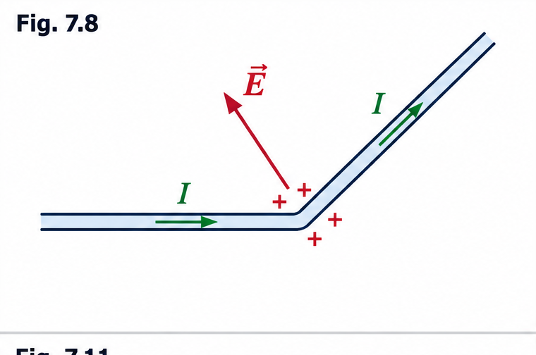
Inside an ideal resistanceless battery ($\sigma = \infty$), the net force on charges is zero ($\mathbf{f} = \mathbf{0}$), so $\mathbf{E} = -\mathbf{f}_s$ and the terminal voltage is $V = -\int_a^b \mathbf{E}\cdot d\mathbf{l} = \int_a^b \mathbf{f}_s\cdot d\mathbf{l} = \mathcal{E}$.
7.1.3 Motional EMF: Who Actually Does the Work?
When a rectangular wire loop of height $h$ is pulled to the right at speed $v$ out of a magnetic field $\mathbf{B}$ (pointing into the page, Fig. 7.10), the mobile charges in the vertical segment $ab$ feel a vertical magnetic force per unit charge $vB$ upward, generating a motional EMF:
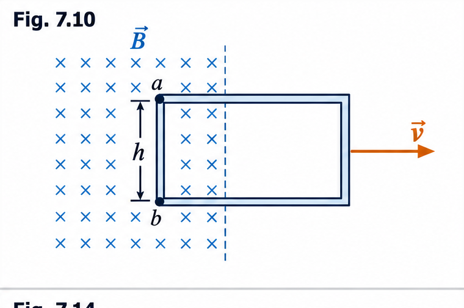
The Great Paradox: We know magnetic forces never do work! So who supplies the energy that heats up the resistor? Let us look at the velocities and forces on a charge in segment $ab$ (Fig. 7.11):
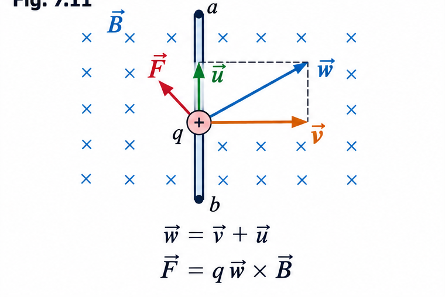
- The wire moves right at velocity $\mathbf{v}$, and the charge drifts up the wire at velocity $\mathbf{u}$, so the charge's actual resultant velocity is diagonal: $\mathbf{w} = \mathbf{v} + \mathbf{u}$ (at angle $\theta$ where $\tan\theta = v/u$).
- Because of the upward drift $\mathbf{u}$, the magnetic force $\mathbf{f}_{\text{mag}} = \mathbf{w}\times\mathbf{B}$ has a horizontal component $uB$ pointing to the left (opposing the pull) in addition to $vB$ upward!
- To keep the loop moving at constant speed $v$, the person pulling the loop must exert a force per unit charge $f_{\text{pull}} = uB$ to the right.
- As the charge travels a diagonal distance $h/\cos\theta$ along $\mathbf{w}$, the work done per unit charge by the person pulling the wire is: $$W_{\text{pull}} = \int \mathbf{f}_{\text{pull}}\cdot d\mathbf{l}_{\text{charge}} = (uB)\left(\frac{h}{\cos\theta}\right)\sin\theta = uBh\tan\theta = vBh = \mathcal{E}!$$ Moral: $\mathbf{f}_{\text{mag}}$ establishes the EMF (integrated around the wire at one instant), while $\mathbf{f}_{\text{pull}}$ does the actual work (integrated along the diagonal path of the moving charge), and both give $vBh$!
Proof of the flux rule for motional EMF
Derive the general flux rule step by step, then use it.
Proving the General Flux Rule for Motional EMF ($\mathcal{E} = -\frac{d\Phi}{dt}$)
Let us prove that $\mathcal{E} = -\frac{d\Phi}{dt}$ holds for any loop (even non-rectangular loops that stretch or deform as they move through a nonuniform field $\mathbf{B}$, Fig. 7.13)!
Example 7.4 (Faraday Dynamo) & Example 7.5 (Eddy Currents)
- Example 7.4 (Faraday Disk, Fig. 7.15): A metal disk of radius $a$ rotates at angular speed $\omega$ in a uniform vertical field $\mathbf{B}$. At radius $s$, the speed is $v = \omega s$, so $\mathbf{f}_{\text{mag}} = \mathbf{v}\times\mathbf{B} = \omega s B\,\hat{\mathbf{s}}$. Integrating from the axle ($s=0$) to the rim ($s=a$):
$$\mathcal{E} = \int_0^a \omega s B\,ds = \frac{1}{2}\omega B a^2, \qquad I = \frac{\omega B a^2}{2R}.$$
(Note: You cannot apply the simple flux rule directly to extended conductors or switches like Fig. 7.14 where there is no single wire path!)
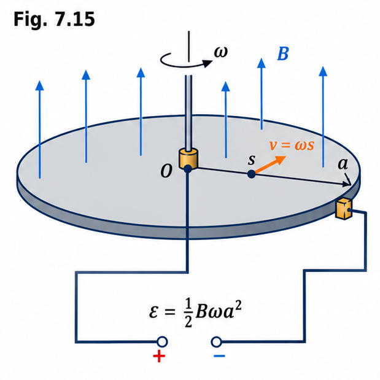
Fig. 7.15 · Faraday disk 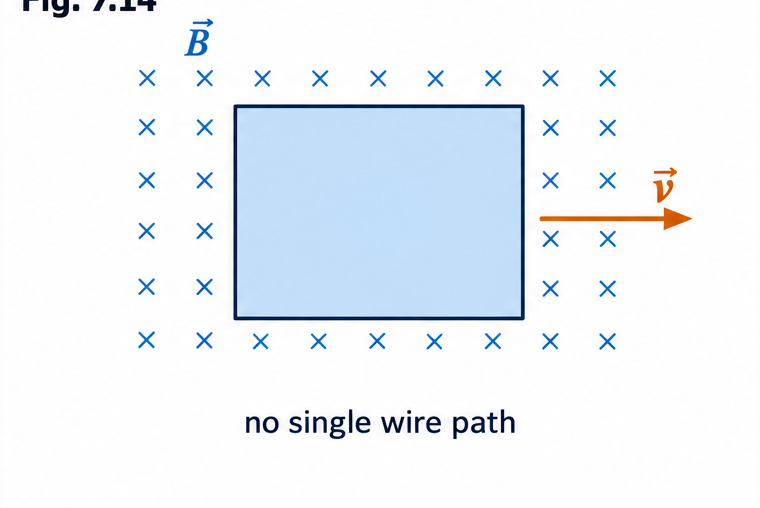
Fig. 7.14 · Extended conductor with no single wire path - Eddy Currents & Example 7.5 (Hertz's Spinning Spherical Shell): Moving a solid conductor through a magnetic field induces circulating eddy currents that oppose the motion and create a viscous magnetic drag (like the solid aluminum pendulum in Fig. 7.16a; cutting slots in Fig. 7.16b stops the large-scale currents). In a conductor moving in $\mathbf{B}$, taking the divergence of $\mathbf{J} = \sigma(\mathbf{E} + \mathbf{v}\times\mathbf{B})$ in the steady state ($\nabla\cdot\mathbf{J} = 0$) gives a non-zero volume charge density $\rho = -\epsilon_0\nabla\cdot(\mathbf{v}\times\mathbf{B})$! For a spherical shell spinning with $\boldsymbol{\omega}\parallel\mathbf{B}$, $\mathbf{E} = -\mathbf{v}\times\mathbf{B}$ cancels the magnetic force so $\mathbf{J} = \mathbf{0}$; for $\boldsymbol{\omega}\perp\mathbf{B}$, eddy currents flow as $\mathbf{J} = -\frac{\sigma}{2}[\mathbf{r}\times(\boldsymbol{\omega}\times\mathbf{B})]$.
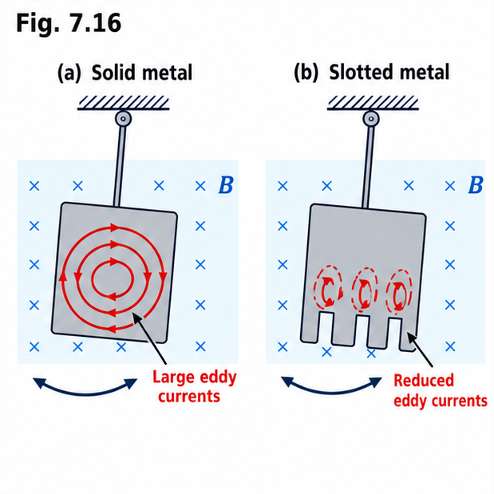
Fig. 7.16 · Eddy-current drag, solid versus slotted pendulum
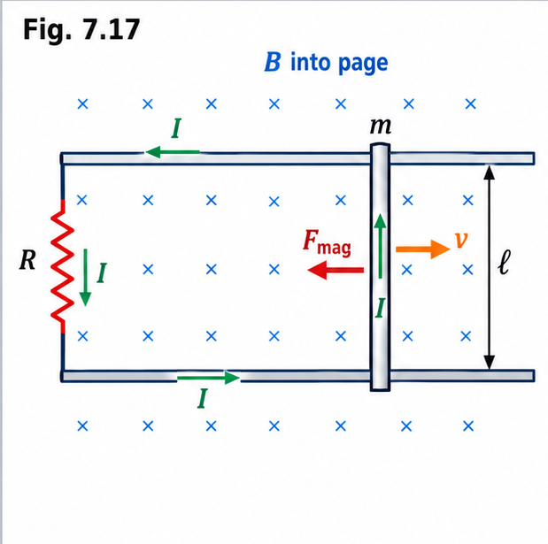
Momentum operator & the uncertainty principle
Expectation values, the momentum operator, and the Heisenberg trade-off between position and momentum.
4. Momentum Operator and Expectation Values
For a particle in state $\Psi(x,t)$, the expectation value of position is:
$\langle x \rangle$ does not mean the average of measuring the same particle over and over again (the first measurement collapses $\Psi$ to a spike, and fast repeated measurements just repeat that same number!). Instead, imagine a shelf of 1,000 identical bottles in a college physics lab, each containing an identically prepared particle in state $\Psi$. If 1,000 students measure one bottle each at the exact same signal, the average of all their readings is $\langle x \rangle$. That collection of identically prepared systems is called an ensemble.
Deriving the Momentum Expectation Value $\langle p \rangle$ & Operator $\hat{p}$
How fast does the expectation value $\langle x \rangle$ move as time passes? We postulate $\langle v \rangle = \frac{d\langle x \rangle}{dt}$ and $\langle p \rangle = m\frac{d\langle x \rangle}{dt}$. Let us derive how to compute $\langle p \rangle$ directly from $\Psi(x,t)$!
Operators for Any Classical Dynamical Variable $Q(x,p)$
An operator is an instruction to do something to the function that follows it. By writing $\langle x \rangle$ and $\langle p \rangle$ as sandwiches between $\Psi^*$ and $\Psi$:
- The operator $\hat{x} = x$ (multiply by $x$) represents position.
- The operator $\hat{p} = -i\hbar\dfrac{\partial}{\partial x}$ represents momentum.
- For any classical dynamical variable $Q(x,p)$, we replace every $p$ with $-i\hbar\frac{\partial}{\partial x}$ and sandwich the resulting operator between $\Psi^*$ and $\Psi$:
Also note Ehrenfest's Theorem (Problem 1.7): Expectation values obey classical laws! Specifically, $\langle p \rangle = m\dfrac{d\langle x \rangle}{dt}$ and $\dfrac{d\langle p \rangle}{dt} = \left\langle -\dfrac{\partial V}{\partial x} \right\rangle$.
5. The Heisenberg Uncertainty Principle
Imagine shaking one end of a long rope rhythmically up and down: you create a long sinusoidal wave. If someone asks, "What is its wavelength $\lambda$?" you can easily answer (say, 6 feet). But if they ask, "Where precisely is the wave?" there is no sharp answer—it is spread over 50 feet! Conversely, if you give the rope a sudden sharp jerk, you create a narrow traveling bump: its position is well-defined, but it isn't periodic, so its wavelength is completely ill-defined.
By the de Broglie formula, the wavelength $\lambda$ of the wave function $\Psi$ is directly related to the particle's momentum $p$:
Here $\sigma_x = \sqrt{\langle x^2 \rangle - \langle x \rangle^2}$ is the standard deviation (spread) in position, and $\sigma_p = \sqrt{\langle p^2 \rangle - \langle p \rangle^2}$ is the standard deviation in momentum. The more precisely a particle's position is determined (small $\sigma_x$), the less precisely its momentum is determined (large $\sigma_p$), and vice versa.
In a music concert, a high-pitched bamboo flute plays a very short note that still contains many full sound wave cycles, so its frequency (pitch) is crystal clear. A deep bass drum hit for the exact same brief instant contains less than one wave cycle—you hear a sharp "thump" at a precise instant in time, but with no clear musical pitch!
Live Trade-off: Top graph shows the wave packet $\psi(x)$ in position space (width $\sigma_x$). Bottom graph shows its Fourier momentum distribution $\phi(p)$ (width $\sigma_p$). Notice that their product $\sigma_x\sigma_p$ never drops below $\hbar/2$!
Stationary states & the time-independent Schrödinger equation
Separation of variables, the TISE, and what makes a state stationary.
6. Stationary States & Time-Independent Schrödinger Equation
How do we actually find $\Psi(x,t)$ from the Schrödinger equation? When the potential $V(x)$ is independent of time $t$, we use the physicist's #1 weapon for partial differential equations: Separation of Variables.
Deriving the Time-Independent Schrödinger Equation (TISE)
We look for product solutions of the form $\Psi(x,t) = \psi(x)\varphi(t)$, where $\psi(x)$ depends only on $x$ and $\varphi(t)$ depends only on $t$. Predict each step!
Three Reasons Why Separable Solutions $\Psi_n(x,t) = \psi_n(x)e^{-iE_n t/\hbar}$ Are So Important
- 1. They are Stationary States: Although $\Psi(x,t) = \psi(x)e^{-iEt/\hbar}$ depends on time $t$, its probability density does not: $$|\Psi(x,t)|^2 = \Psi^*\Psi = \psi^* e^{+iEt/\hbar}\psi e^{-iEt/\hbar} = |\psi(x)|^2.$$ The time dependence cancels out in every expectation value: $\langle Q(x,p) \rangle = \int \psi^* Q\left(x, -i\hbar\frac{d}{dx}\right)\psi\,dx$. In particular, $\langle x \rangle$ is constant, so $\langle p \rangle = 0$. Nothing ever happens in a stationary state!
- 2. They are States of Definite Total Energy: In classical mechanics, the total energy (kinetic + potential) is called the Hamiltonian $H(x,p) = \frac{p^2}{2m} + V(x)$. Substituting $p \to -i\hbar\frac{\partial}{\partial x}$ gives the Hamiltonian operator: $$\hat{H} = -\frac{\hbar^2}{2m}\frac{\partial^2}{\partial x^2} + V(x) \quad \text{so TISE reads} \quad \hat{H}\psi = E\psi.$$ Therefore, $\langle H \rangle = \int \psi^* \hat{H}\psi\,dx = E\int |\psi|^2 dx = E$, and $\hat{H}^2\psi = E^2\psi \implies \langle H^2 \rangle = E^2$. The variance of total energy is: $$\sigma_H^2 = \langle H^2 \rangle - \langle H \rangle^2 = E^2 - E^2 = 0!$$ Zero variance means every measurement of the total energy in a separable state is 100% certain to return the exact value $E$!
- 3. The General Solution is a Linear Combination of Separable Solutions: The TISE yields an infinite set of solutions $\psi_1(x), \psi_2(x), \dots$ with allowed energies $E_1, E_2, \dots$. By superposition, the most general solution to the time-dependent Schrödinger equation is:
Note that since $|c_n|^2$ and $\langle H \rangle$ are independent of time, energy is conserved! Also, as shown in Example 2.1, if a particle is in a linear combination of two stationary states $\Psi(x,0) = c_1\psi_1(x) + c_2\psi_2(x)$ (with real $c_n, \psi_n$), then at later times: $$|\Psi(x,t)|^2 = c_1^2\psi_1^2 + c_2^2\psi_2^2 + 2c_1c_2\psi_1\psi_2\cos\left[\frac{(E_2 - E_1)t}{\hbar}\right]$$ which oscillates sinusoidally at angular frequency $\omega = (E_2 - E_1)/\hbar$! It takes a superposition of different energies to produce motion.General Solution & Probability Amplitudes (Eqs. 2.17–2.21)$$\Psi(x,t) = \sum_{n=1}^\infty c_n \psi_n(x) e^{-iE_n t/\hbar} = \sum_{n=1}^\infty c_n \Psi_n(x,t)$$ $$\text{Prob}(\text{measuring } E_n) = |c_n|^2, \qquad \sum_{n=1}^\infty |c_n|^2 = 1, \qquad \langle H \rangle = \sum_{n=1}^\infty |c_n|^2 E_n$$
Four Key Theorems on $\psi(x)$ and $E$ (Problems 2.1 & 2.2)
- Theorem 1 (Problem 2.1a): For normalizable solutions, the separation constant $E$ must be real. (If $E = E_0 + i\Gamma$, then $\int |\Psi|^2 dx = e^{2\Gamma t/\hbar}\int |\psi|^2 dx$, which violates normalization for all $t$ unless $\Gamma = 0$.)
- Theorem 2 (Problem 2.1b): The spatial wave function $\psi(x)$ can always be chosen to be real (since $\psi + \psi^*$ and $i(\psi - \psi^*)$ are real solutions with the same energy $E$).
- Theorem 3 (Problem 2.1c): If the potential is an even function, $V(-x) = V(x)$, then $\psi(x)$ can always be chosen to be either even or odd: $\psi(-x) = \pm\psi(x)$.
- Theorem 4 (Problem 2.2): The energy $E$ must exceed the minimum value of the potential, $E > V_{\min}$, for every normalizable solution. (If $E < V_{\min}$, then $\frac{d^2\psi}{dx^2} = \frac{2m}{\hbar^2}[V(x) - E]\psi$ means $\psi$ and $\frac{d^2\psi}{dx^2}$ always have the same sign, so $\psi$ curves away from the $x$-axis and blows up at infinity!)
Faraday's law, inductance & Maxwell's equations
Faraday's law, the induced electric field, inductance and magnetic energy, then Maxwell's equations and the missing term.
2. Faraday's Law, Induced Electric Field, Inductance & Magnetic Energy
7.2.1 Faraday's Three Experiments, Faraday's Law & Lenz's Law
In 1831, Michael Faraday performed three famous experiments (Fig. 7.21):
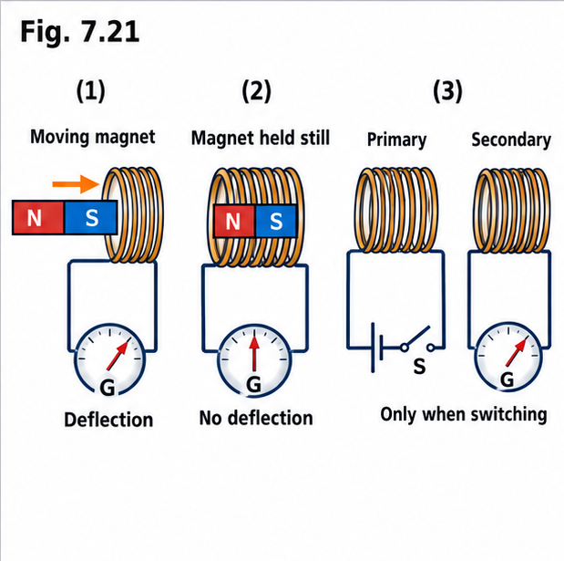
- Experiment 1: Pulled a loop of wire to the right through a stationary magnetic field $\implies$ current flowed (motional EMF, magnetic Lorentz force).
- Experiment 2: Moved the magnet to the left, holding the loop stationary $\implies$ the exact same current flowed!
- Experiment 3: Held both loop and magnet at rest, and changed the strength of $\mathbf{B}$ $\implies$ again current flowed!
In Experiments 2 and 3, the charges in the stationary wire are at rest ($\mathbf{v} = \mathbf{0}$), so no magnetic force can act on them! Faraday deduced the fundamental new law: A changing magnetic field induces an electric field $\mathbf{E}$:
Universal Flux Rule: Whenever (and for whatever reason—motional or induced electric field) the magnetic flux $\Phi$ through a loop changes, an EMF $\mathcal{E} = -\dfrac{d\Phi}{dt}$ appears in the loop.
Lenz's Law: Nature abhors a change in flux. The induced current flows in such a direction that the magnetic flux it produces tends to oppose the change in external flux (e.g., Example 7.6 bar magnet passing through a ring produces two opposite EMF spikes; Example 7.7 the "jumping ring" flies into the air because its induced current opposes the upward flux buildup in the solenoid).
In an induction cooktop used in homes across Kerala, a coil beneath the glass top carries a rapidly alternating current, creating a rapidly changing magnetic field $\partial\mathbf{B}/\partial t$. Even though the stainless steel vessel sits completely still on the cool glass, Faraday's induced electric field $\mathbf{E}$ drives strong eddy currents in the flat base of the vessel, heating the food directly via $I^2R$!
7.2.2 Calculating the Induced Electric Field (Analogy with Magnetostatics)
For a pure Faraday field (with no free charge, $\rho = 0$), $\mathbf{E}$ satisfies:
Compare this with magnetostatics: $\nabla\cdot\mathbf{B} = 0$ and $\nabla\times\mathbf{B} = \mu_0\mathbf{J}$! They are mathematically identical if you replace $\mu_0\mathbf{J} \to -\dfrac{\partial\mathbf{B}}{\partial t}$ and $\mathbf{B} \to \mathbf{E}$! Whenever cylindrical, solenoidal, or toroidal symmetry is present, we can find $\mathbf{E}$ using $\oint \mathbf{E}\cdot d\mathbf{l} = -\dfrac{d\Phi}{dt}$ just like Ampère's law:
- Example 7.8 (Uniform $\mathbf{B}(t)$ inside cylinder of radius $R$, Fig. 7.25): By symmetry, $\mathbf{E}$ points circumferentially ($\hat{\boldsymbol{\phi}}$). Around a circular Ampèrian loop of radius $s < R$:
$$\oint \mathbf{E}\cdot d\mathbf{l} = E(2\pi s) = -\frac{d}{dt}(\pi s^2 B) = -\pi s^2\frac{dB}{dt} \implies \boxed{\mathbf{E} = -\frac{s}{2}\frac{dB}{dt}\hat{\boldsymbol{\phi}} \quad (s < R)}.$$
And for $s > R$ (outside the field region, as in Example 7.9 at wheel rim $b > a$): $\Phi = \pi a^2 B$, so $\boxed{\mathbf{E} = -\frac{a^2}{2s}\frac{dB}{dt}\hat{\boldsymbol{\phi}} \quad (s > a)}$.
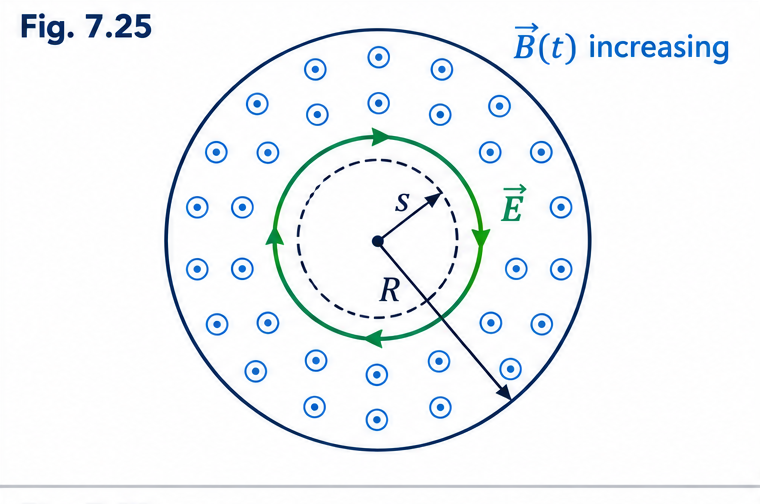
Fig. 7.25 · Uniform time-varying field in a cylinder - Example 7.9 (Feynman's Charged Wheel, Fig. 7.26): A wheel of radius $b$ with line charge $\lambda$ on its rim surrounds a central magnetic field $B_0\hat{\mathbf{z}}$ of radius $a$. Even though $\mathbf{B} = \mathbf{0}$ at the rim, turning off $\mathbf{B}_0$ induces $E = -\frac{a^2}{2b}\frac{dB}{dt}$ at the rim, exerting torque $N = -\lambda\pi a^2 b\frac{dB}{dt}$ and spinning up the wheel to final angular momentum $L = \int N\,dt = \lambda\pi a^2 b B_0$!
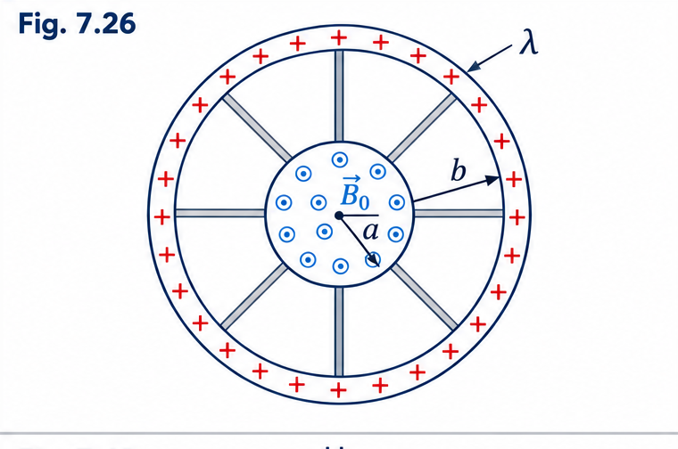
Fig. 7.26 · Feynman's charged wheel - Quasistatic Approximation (Example 7.10): Using static formulas (like $B = \mu_0 I / 2\pi s$) to compute $\mathbf{B}(t)$ on the right side of Faraday's law is valid as long as the field varies slowly enough that distance $s \ll c\tau$.
7.2.3 Mutual Inductance ($M$) & Self-Inductance ($L$)
When current $I_1$ flows in loop 1, the Biot-Savart law tells us its magnetic field $\mathbf{B}_1$ (and therefore the flux $\Phi_2$ through a second loop 2) is strictly proportional to $I_1$: $\Phi_2 = M_{21}I_1$. By Stokes' theorem, $\Phi_2 = \int\mathbf{B}_1\cdot d\mathbf{a}_2 = \oint\mathbf{A}_1\cdot d\mathbf{l}_2$. Substituting $\mathbf{A}_1 = \frac{\mu_0 I_1}{4\pi}\oint\frac{d\mathbf{l}_1}{\mathcal{R}}$ gives the Neumann Formula:
- Two Astonishing Facts from Neumann's Formula: (1) $M$ is a purely geometrical quantity (depending only on sizes, shapes, and relative positions), and (2) $M_{12} = M_{21} = M$ always!
- Example 7.11 (Short Solenoid inside Long Solenoid, Fig. 7.32): Finding the flux of a short solenoid ($l, a, n_1$) through a long solenoid ($b, n_2$) directly is awful. Instead, run current $I$ in the long outer solenoid (where $B = \mu_0 n_2 I$ is uniform!) and find the flux through all $n_1 l$ turns of the short inner solenoid: $\Phi = (\mu_0 n_2 I)(\pi a^2)(n_1 l) \implies M = \mu_0\pi a^2 n_1 n_2 l$.
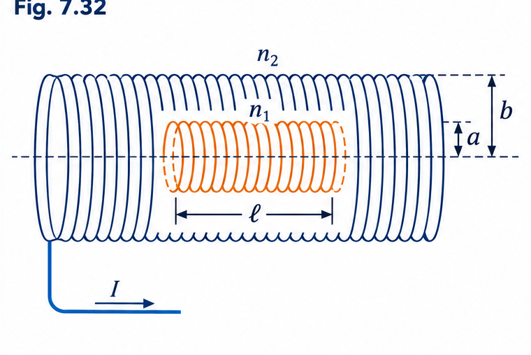
Fig. 7.32 · Short solenoid inside a long solenoid - Self-Inductance $L$: A current $I$ also puts flux $\Phi = LI$ through its own loop (measured in henries, $\text{H} = \text{V}\cdot\text{s/A}$). Changing $I$ induces a back EMF $\mathcal{E} = -L\frac{dI}{dt}$ opposing the change.
- Long Solenoid (Prob. 7.25): $\Phi = (nl)(\mu_0 n I)(\pi R^2) \implies L = \mu_0 n^2 \pi R^2 l$.
- Toroidal Coil of Rectangular Cross Section (Example 7.12): $B = \frac{\mu_0 NI}{2\pi s} \implies L = \dfrac{\mu_0 N^2 h}{2\pi}\ln\left(\frac{b}{a}\right)$.
- RL Circuit Current Buildup (Example 7.13): $\mathcal{E}_0 - L\frac{dI}{dt} = IR \implies I(t) = \frac{\mathcal{E}_0}{R}\left(1 - e^{-t/\tau}\right)$ with time constant $\tau = \dfrac{L}{R}$.
7.2.4 Energy Stored in Magnetic Fields
To build up a current $I$ in an inductor $L$, you must do work against the back EMF at the rate $\frac{dW}{dt} = -\mathcal{E}I = LI\frac{dI}{dt}$. Integrating from $0$ to $I$ gives:
Since $LI = \Phi = \oint \mathbf{A}\cdot d\mathbf{l}$, we can write $W = \frac{1}{2}I\oint \mathbf{A}\cdot d\mathbf{l} \to \frac{1}{2}\int (\mathbf{A}\cdot\mathbf{J})\,d\tau = \frac{1}{2\mu_0}\int \mathbf{A}\cdot(\nabla\times\mathbf{B})\,d\tau$. Using the product rule $\mathbf{A}\cdot(\nabla\times\mathbf{B}) = B^2 - \nabla\cdot(\mathbf{A}\times\mathbf{B})$ and integrating over all space (so the surface integral vanishes at infinity) yields:
In Example 7.14, for a coaxial cable of length $l$ (inner radius $a$, outer radius $b$), $B = \frac{\mu_0 I}{2\pi s}$, so integrating $\frac{B^2}{2\mu_0}(2\pi s l\,ds)$ from $a$ to $b$ gives $W = \frac{\mu_0 I^2 l}{4\pi}\ln(b/a)$, and comparing with $\frac{1}{2}LI^2$ immediately gives $L = \frac{\mu_0 l}{2\pi}\ln(b/a)$!
3. Maxwell's Equations, Matter & Boundary Conditions
7.3.1 – 7.3.3 How Maxwell Fixed Ampère's Law: Displacement Current
Before Maxwell, Ampère's law read $\nabla\times\mathbf{B} = \mu_0\mathbf{J}$. Taking the divergence of both sides gives $\nabla\cdot(\nabla\times\mathbf{B}) = 0$ on the left, but $\mu_0(\nabla\cdot\mathbf{J}) = -\mu_0\frac{\partial\rho}{\partial t}$ on the right, which is not zero when charge is piling up (such as on a charging capacitor, Fig. 7.43, where a flat surface gives $I_{\text{enc}} = I$ while a balloon-shaped surface between the plates gives $I_{\text{enc}} = 0$).
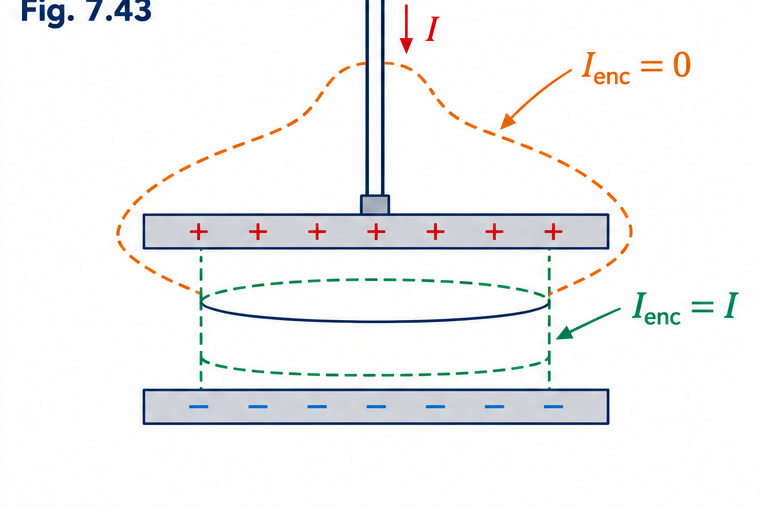
Maxwell used the continuity equation and Gauss's law ($\rho = \epsilon_0\nabla\cdot\mathbf{E}$) to rewrite $\nabla\cdot\mathbf{J}$:
By adding the displacement current density $\mathbf{J}_d \equiv \epsilon_0\dfrac{\partial\mathbf{E}}{\partial t}$ to $\mathbf{J}$, Maxwell cured the inconsistency and revealed that a changing electric field induces a magnetic field:
Maxwell's equations in matter & boundary conditions
Derive Maxwell's equations in matter and the interface boundary conditions.
Deriving Maxwell's Equations in Matter & Interface Boundary Conditions
Inside polarizable and magnetizable materials, we have bound charge $\rho_b = -\nabla\cdot\mathbf{P}$ and magnetization bound current $\mathbf{J}_b = \nabla\times\mathbf{M}$. What happens when $\mathbf{P}$ changes with time, and how do the fields behave across a boundary?
Maxwell's Equations in Matter:
$$\nabla\cdot\mathbf{D} = \rho_f, \qquad \nabla\cdot\mathbf{B} = 0, \qquad \nabla\times\mathbf{E} = -\frac{\partial\mathbf{B}}{\partial t}, \qquad \nabla\times\mathbf{H} = \mathbf{J}_f + \frac{\partial\mathbf{D}}{\partial t}$$General Boundary Conditions (and for Linear Media where $\mathbf{D} = \epsilon\mathbf{E}, \mathbf{H} = \frac{1}{\mu}\mathbf{B}$):
$$\begin{aligned} \text{(i)}\quad D^\perp_{\text{above}} - D^\perp_{\text{below}} &= \sigma_f \quad &\Longleftrightarrow\quad \epsilon_{\text{above}}E^\perp_{\text{above}} - \epsilon_{\text{below}}E^\perp_{\text{below}} &= \sigma_f \\ \text{(ii)}\quad B^\perp_{\text{above}} - B^\perp_{\text{below}} &= 0 \quad &\Longleftrightarrow\quad B^\perp_{\text{above}} - B^\perp_{\text{below}} &= 0 \\ \text{(iii)}\quad \mathbf{E}^\parallel_{\text{above}} - \mathbf{E}^\parallel_{\text{below}} &= \mathbf{0} \quad &\Longleftrightarrow\quad \mathbf{E}^\parallel_{\text{above}} - \mathbf{E}^\parallel_{\text{below}} &= \mathbf{0} \\ \text{(iv)}\quad \mathbf{H}^\parallel_{\text{above}} - \mathbf{H}^\parallel_{\text{below}} &= \mathbf{K}_f \times \hat{\mathbf{n}} \quad &\Longleftrightarrow\quad \frac{1}{\mu_{\text{above}}}\mathbf{B}^\parallel_{\text{above}} - \frac{1}{\mu_{\text{below}}}\mathbf{B}^\parallel_{\text{below}} &= \mathbf{K}_f \times \hat{\mathbf{n}} \end{aligned}$$